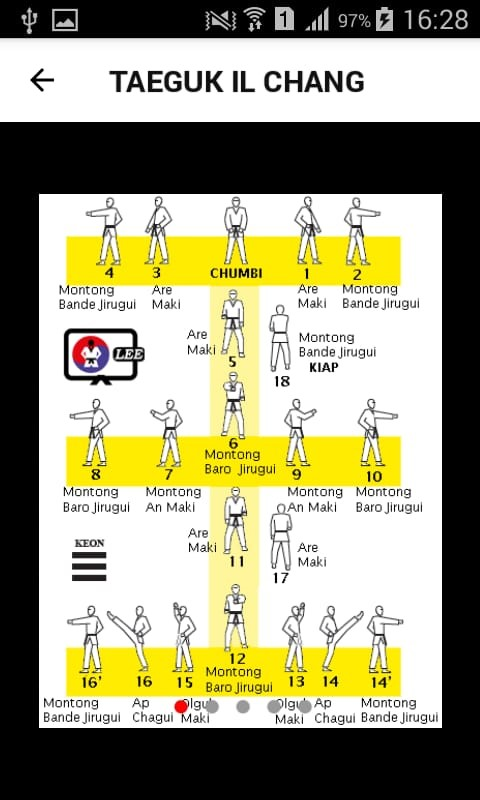

Poomses
Aquí podremos encontrar mucha información sobre los 24 Poomses del Taekwondo. Tendremos fotografías de todos los movimientos, videos y explicaciones detalladas. Todo el material fotográfico es provisto por profesionales y atletas de alto rendimiento.
Al entrar a la pantalla vemos todos los Poomses, y para entrar a alguno simplemente hay que presionar el nombre del Poomse que queramos aprender.



Presionando el icono superior izquierdo que representa una flecha podemos volver a la pantalla principal con el listado de todos los pumses.